Programming Projects: SCF with density fitting
Overview:
In this project, you will learn how to write a restricted Hartree-Fock
self-consistent field (SCF) solver as a plugin to the Psi4 electronic structure
package. The solver will make use of density fitting technology so as
to avoid the generation and storage of the four-index two-electron
repulsion integral tensor. In addition to learning how an SCF procedure
actually works, you will also learn how to interface with the
Matrix class and some of the integral evaluation machinery in Psi4.
For a
tutorial that does not require the use of Psi4, see Daniel Crawford's
SCF project (this project was adapted from that one). That project
does not use density fitting, and all required integrals are read from
text files so that your code can be written independently of any
electronic structure package.
For additional information about the SCF procedure, I recommend Szabo and
Ostlund's awesome (and cheap!) book Modern Quantum Chemistry or David Sherrill's
online notes.
The C++ code for this SCF plugin can be found
here.
Background:
Note: we use atomic units throughout this tutorial.
At the Hartree-Fock level of theory, the N-electron wave function
is approximated as an antisymmetrized product of N one-electron
functions called molecular orbitals (MOs). We call this type of wave function
a Slater
determinant, and the associated electronic energy can be expressed as
$$E_\text{electronic} = \sum_{\mu\nu} D_{\mu\nu} (h_{\mu\nu} + F_{\mu\nu})$$
where D represents a density matrix (defined below),
h represents the core Hamiltonian matrix, and F
represents the Fock matrix. Here, Greek indices represent
atomic orbital (AO) basis functions. The core Hamiltonian matrix
contains integrals that represent the kinetic energy of
an electron (T)
and electron-nuclear potential energy (V):
$$h_{\mu\nu} = T_{\mu\nu} + V_{\mu\nu}$$
The matrix elements of the kinetic energy are integrals over the real-valued
AO basis functions, χ, with the quantum-mechanical
kinetic energy operator:
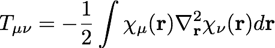
We should note here that these basis functions are not
orthogonal, and we define the overlap matrix , S, as
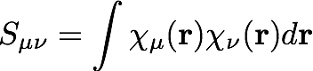
The matrix elements of the electron-nuclear potential energy are integrals
over
basis functions with the potential energy operator (Z/r):
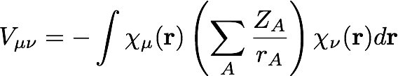
Here, there are multiple nuclei, labeled A, with
nuclear charge ZA and a distance from the electron of
rA. The Fock matrix is defined as
where the symbol, (μν|λσ) represents a
two-electron repulsion integral, defined as
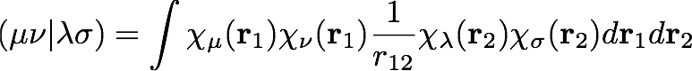
The actual working equations for Hartree-Fock theory are derived
by considering a constrained minimization of the electronic energy
with respect to the shape of the molecular orbitals, φ,
which are expanded as a linear combination of atomic orbitals:
Using Lagrange's method of undetermined multipliers, the electronic
energy is minimized with respect to the elements of C
subject to the constraint that the molecular orbitals form an
orthonormal set. Eventually, these considerations lead to an
eigenvalue problem; the molecular orbitals are the eigenvectors
of the Fock matrix, and the corresponding eigenvalues (which
are the multipliers) are
interpreted as the molecular orbital energies.
We now develop a computational procedure for determining the
molecular orbitals
and the electronic energy with the Psi4 electronic structure package.
Procedure:
Step 1. Create a new plugin
Create a new plugin, as described here. If you called your plugin
"myscf," then all of your code can be placed inside plugin.cc. Open plugin.cc
and locate the myscf(Options & options) function:
extern "C"
SharedWavefunction myscf(SharedWavefunction ref_wfn, Options& options)
{
int print = options.get_int("PRINT");
/* Your code goes here */
// Typically you would build a new wavefunction and populate it with data
return ref_wfn;
}
Like the comment says, your code goes there!
Before moving on, open the input file in your plugin directory (input.dat)
and look at the molecule block
molecule {
O
H 1 R
H 1 R 2 A
R = .9
A = 104.5
# add this line!
symmetry c1
}
This plugin will not make use of point group symmetry, so you
should add a line specifying that the computation be performed
using C1 symmetry. Now, add a flag indicating that
the computation will use density fitting techniques:
set {
#add this line!
scf_type df
basis sto-3g
}
For the remainder of this
project, I've assumed that the rest of the input is unchanged.
Keep this in mind when comparing to my results.
Step 2. Obtain 1-electron integrals
Now, close input.dat and open plugin.cc. In order to use
Psi4's built-in
integral libraries, matrix classes, etc., we must include the corresponding
headers at the top of the file. Add the following headers:
#include "psi4/libmints/wavefunction.h"
#include "psi4/libmints/mintshelper.h"
#include "psi4/libmints/matrix.h"
#include "psi4/libmints/vector.h"
#include "psi4/libmints/basisset.h"
#include "psi4/libmints/molecule.h"
#include "psi4/lib3index/dftensor.h"
#include "psi4/libqt/qt.h"
We can now use Psi4's
MintsHelper class to grab all of the one-electron integrals we'll need
inside the function SharedWavefunction myscf(SharedWavefunction ref_wfn, Options& options).
// grab the one-electron integrals from MintsHelper:
std::shared_ptr<MintsHelper> mints (new MintsHelper(ref_wfn));
// one-electron kinetic energy integrals
std::shared_ptr<Matrix> T = mints->so_kinetic();
// one-electron potential energy integrals
std::shared_ptr<Matrix> V = mints->so_potential();
// overlap integrals
std::shared_ptr<Matrix> S = mints->so_overlap();
// build the core hamiltonian
std::shared_ptr<Matrix> h = (std::shared_ptr<Matrix>)(new Matrix(T));
h->add(V);
Note that all of the MintsHelper functions we call all have the prefix "so,"
which stands for "symmetry orbital." The SO basis is obtained by transforming
the AO basis functions so that the SOs belong to a proper irreducible
representation in the molecule's point group. If we are
not using symmetry (which is the case here), then the AO and SO bases are
equivalent.
Step 3. Obtain 2-electron integrals
Now, we need the two-electron integrals in the SO basis. This is a complicated
task, so we're going to cheat and use density-fitted
three-index integrals instead of the full four-index electron repulsion
integral tensor.
In order to construct the three-index integrals, we will need (1) the
molecule object, (2) the
primary basis set, and (3) the auxiliary (or density-fitting) basis set.
To generate the three-index integrals:
// grab the molecule from the wavefunction that was passed into the plugin
std::shared_ptr<Molecule> mol = ref_wfn->molecule();
// get primary basis:
std::shared_ptr<BasisSet> primary = ref_wfn->get_basisset("ORBITAL");
// total number of basis functions
int nso = primary->nbf();
// get auxiliary basis:
std::shared_ptr<BasisSet> auxiliary = ref_wfn->get_basisset("DF_BASIS_SCF");
// total number of auxiliary basis functions
int nQ = auxiliary->nbf();
Note that we are using the strings "ORBITAL" and "DF_BASIS_SCF" when we
grab the primary and
auxiliary basis sets. What are these?
The primary basis set ("ORBITAL") should be set in the input file (e.g. "set basis sto-3g"). It was
automatically set to STO-3G
when you generated your plugin (check if you don't believe me!).
The auxiliary basis set ("DF_BASIS_SCF") can be specified in the input file,
but it was
not automatically set when the plugin was created. Fortunately, since we
requested that the scf_type be "DF",
Psi4 is smart enough to pick a DF basis for you. If
no "DF_BASIS_SCF" was specified in the input, then Psi4 picks the "JKFIT"
variant of the primary "ORBITAL" basis that it
deems appropriate. For the STO-3G basis, Psi4 will choose smallest possible "JKFIT" set, def2-svp-jkfit.
Moving on!
// use the molecule to determine the total number of electrons
int charge = mol->molecular_charge();
int nelectron = 0;
for (int i = 0; i < mol->natom(); i++) {
nelectron += (int)mol->Z(i);
}
nelectron -= charge;
// this code only works for closed shells
if ( nelectron % 2 != 0 ) {
throw PsiException("plugin myscf only works for closed shells",__FILE__,__LINE__);
}
// the number of doubly occupied orbitals (or alpha electrons)
int na = nelectron / 2;
// allocate memory for SO->MO coefficients
std::shared_ptr<Matrix> Ca = (std::shared_ptr<Matrix>)(new Matrix(nso,nso));
// construct the three-index integrals
// since we want the SO-basis integrals, it is fine to pass empty Ca matrix
// similarly, the number of active vs inactive orbitals isn't really important here.
std::shared_ptr<DFTensor> DF (new DFTensor(primary,auxiliary,Ca,na,nso-na,na,nso-na,options));
std::shared_ptr<Matrix> Qso = DF->Qso();
Now, we have a Matrix object, Qso, that contains the three-index integrals. The Psi4
Matrix class has a number of built in functions [add(), zero(), diagonalize(), print(), etc.].
We already used the add() function above to build the core Hamililtonian. The Matrix class
also allows the user to access the data directly:
double ** Qp = Qso->pointer();
The double pointer Qp points to the three-index integrals, and a single element (Q|μν)
is accessed as Qp[Q][mu*nso+nu]. Here, Q is the auxiliary basis function index,
μ and ν are
primary basis function indices, and nso is the number of primary basis
functions. The four-index integrals could be constructed as a contraction of
the three-index integrals:
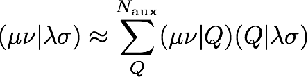
but doing so defeats the purpose of using three-index integrals. First, the
cost of that step would scale computationally with the fifth power of the
system size, whereas the SCF procedure should only scale as the fourth-power.
Second, the four-index tensor is a larger object; it takes up much more
space than the three-index integrals either in memory or on disk.
We will avoid building the four-index integrals by
expressing the Fock matrix in terms of the three-index integrals (see
Step 6 below).
Step 4. Symmetric orthogonalization
Oftentimes in electronic structure theory, we would prefer to
work within a basis of orthonormal functions, which
simplifies the math. However, our SO basis functions
are not orthogonal. We can generate an orthogonal
basis via Löwdin's symmetric orthogonalization. One
first finds a transformation that diagonalizes the overlap
matrix, S,
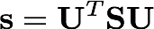
where s is a diagonal matrix of eigenvalues. We then
construct the symmetric orthogonalization matrix by taking
the inverse square root of the eigenvalues and backtransforming
them to the original basis.
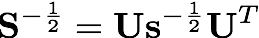
The following code snippet illustrates how to diagonalize the
overlap matrix using Psi4's Matrix class. The back
transformation is performed using a built-in function in
the Matrix class.
// allocate memory for eigenvectors and eigenvalues of the overlap matrix
std::shared_ptr<Matrix> Sevec ( new Matrix(nso,nso) );
std::shared_ptr<Vector> Seval ( new Vector(nso) );
// build S^(-1/2) symmetric orthogonalization matrix
S->diagonalize(Sevec,Seval);
std::shared_ptr<Matrix> Shalf = (std::shared_ptr<Matrix>)( new Matrix(nso,nso) );
for (int mu = 0; mu < nso; mu++) {
Shalf->pointer()[mu][mu] = 1.0 / sqrt(Seval->pointer()[mu]);
}
// transform Seval back to nonorthogonal basis
Shalf->back_transform(Sevec);
Check your S-1/2 matrix using the Shalf->print() function.
Step 5. Guess orbitals, density, and energy
To obtain a set of guess orbitals and an initial density, we approximate
the initial Fock matrix as the core Hamiltonian
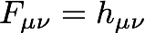
Next, use the symmetric orthogonalization matrix to bring this
Fock matrix to a basis of orthonormal functions
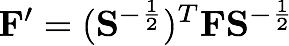
Check your F' matrix.
We will now diagonalize this transformed Fock matrix to determine
its eigenvectors (the molecular orbitals, C') and eigenvalues
(the molecular orbital energies, ε)
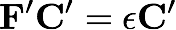
The matrix C' represents the molecular orbitals as a linear
combination of orthonormalized basis functions, but what we really
want is the linear combination of nonorthogonal AO (or SO) basis functions.
We need to back transform one index of C' to the original
AO basis
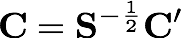
Since you are only transforming one index, don't use the Matrix class back_transform()
call. You could use the Matrix class gemm() call
// Find C = S^(-1/2)C'
Ca->gemm(false,false,1.0,Shalf,Fevec,0.0);
where Fevec is a Matrix containing the eigenvectors of F'.
Alternatively, you could grab the appropriate pointers
double ** cp = Ca->pointer();
double ** sp = Shalf->pointer();
double ** fp = Fprime->pointer();
and transform that index using explicit loops.
Check your MO coefficients.
Now, we define the density matrix as the contraction of the
molecular orbital coefficients over the N/2 lowest-energy
molecular orbitals (the doubly occupied orbitals):
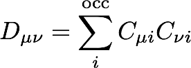
This density can then be used to evaluate the initial electronic energy
and to obtain a new Fock matrix.
Check your density.
Step 6. The SCF procedure
You may have noticed that the Fock matrix depends on the density:
and the density is determined by diagonalizing the Fock matrix. If
this seems a bit circular, you're right;
we must determine the density for the system self-consistently. We
repeatedly construct and diagonalize the Fock matrix until the electronic
energy and density matrix cease to change. The self-consistent nature
of the solution is the source of the name of the procedure: the
Hartree-Fock self-consistent field procedure.
The SCF procedure is quite simple. Repeat Step 5, but use the correct
Fock matrix (rather than the core Hamiltonian), until the changes in the energy
and the density between iterations fall below some threshold.
Since we're using three-index integrals instead of four-index integrals,
we rewrite the Fock matrix as
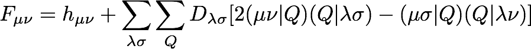
Programming this expression is a little more manageable if
we write the Fock
matrix in terms of the coulomb and exchange
matrices, J and K
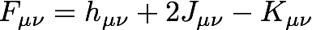
where
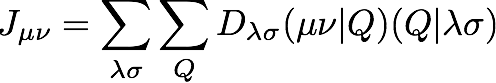
and
The coulomb matrix can be built at third-power computational cost as
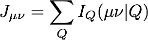
where we have introduced the intermediate quantity
The exchange matrix can be built at fourth-power
computational costs as
where we have introduced another intermediate tensor, defined as
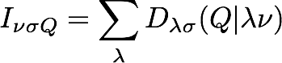
Check your coulomb, exchange,
and Fock matrices from the first SCF iteration.
Step 7. Monitoring convergence
The SCF procedure is considered converged when the changes in the
energy and density between iterations fall below some predefined thresholds.
In Psi4, these convergence thresholds can be specified in the input
file and obtained in your plugin from the "options" object:
// grab some input options
double e_convergence = options.get_double("E_CONVERGENCE");
double d_convergence = options.get_double("D_CONVERGENCE");
During the SCF procedure, we must monitor the change in the energy between
iterations k-1 and k
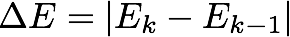
as well as the change in the density
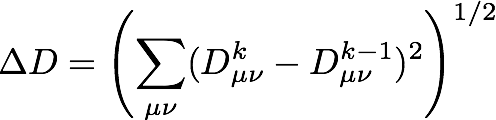
For the present molecule/basis set, the energy and density
should converge to 8 decimal places in about 20 iterations:
Guess energy: -118.308230720195
==> Begin SCF Iterations <==
Iter energy dE dD
0 -73.196938802590 45.111291917606 1.897398367075
1 -74.939192979912 1.742254177322 0.112061053541
2 -74.944687307723 0.005494327810 0.028486807507
3 -74.945047846359 0.000360538636 0.010519702816
4 -74.945095717293 0.000047870934 0.004071261334
5 -74.945103245231 0.000007527938 0.001631352920
6 -74.945104500825 0.000001255594 0.000664268555
7 -74.945104714580 0.000000213755 0.000272761967
8 -74.945104751219 0.000000036639 0.000112497614
9 -74.945104757513 0.000000006294 0.000046510048
10 -74.945104758595 0.000000001082 0.000019254367
11 -74.945104758781 0.000000000186 0.000007976956
12 -74.945104758813 0.000000000032 0.000003306204
13 -74.945104758819 0.000000000006 0.000001370652
14 -74.945104758820 0.000000000001 0.000000568310
15 -74.945104758820 0.000000000000 0.000000235655
16 -74.945104758820 0.000000000000 0.000000097721
17 -74.945104758820 0.000000000000 0.000000040524
18 -74.945104758820 0.000000000000 0.000000016805
19 -74.945104758820 0.000000000000 0.000000006969
SCF iterations converged!
* SCF total energy: -74.945104758820
Note that the energy here is the total energy
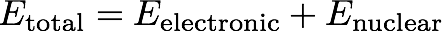
You can grab the nuclear repulsion energy from the molecule object:
double e_nuc = mol->nuclear_repulsion_energy({0.0,0.0,0.0});